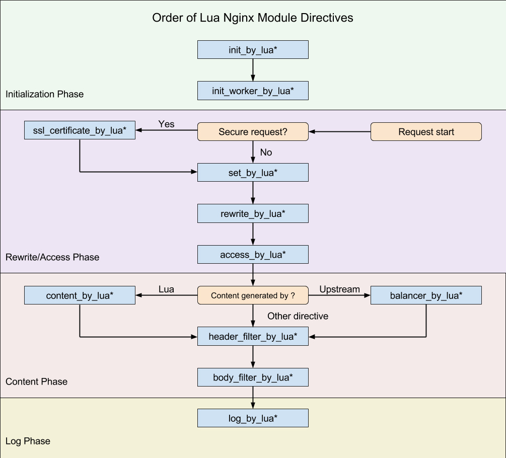

OpenResty 是一个基于
nginx与Lua的高性能Web平台，其内部集成了大量精良的Lua库、第三方模块以及大多数的依赖项。 用于方便地搭建能够处理超高并发、扩展性极高的动态Web应用、Web服务和动态网关。
研究和学习ngx_lua以及lua协程对理解OpenResty源码很有帮助, 收集一些ngx_lua源码讲解的文章。
ngx_lua
nginx是事件驱动的异步处理方式，Lua语言本身是同步处理，但是Lua原生支持协程，给nginx与Lua的结合提供了机会。
nginx可以同时处理数以万计的网络连接，Lua可以同时存在很多协程，简单一点想，对每个到来的网络连接，创建一个新的协程去处理，处理完毕后释放协程。 和Apache为每个连接fork一个进程处理的流程十分相似，只不过多个进程换成了多个协程。
协程相比较进程占用资源很小，协程之间的切换性能消耗非常小，几乎就相当于函数调用一样。以同步的方式写程序，实现了异步处理的效率。当然实际的编程实现并没有多进程那么简单。
在Lua中，每个协程对应有一个lua_State结构体， 这个结构体中保存了协程的所有信息。所有的协程共享一个global_State结构体，这个结构体保存全局相关的一些信息，主要是所有需要垃圾回收的对象。
通常创建Lua执行环境都是从lua_open(即luaL_newstate)开始, lua_open会创建一个global_State结构，创建一个协程作为主协程ngx_http_lua_module是在读取配置后的postconfiguration阶段创建Lua环境的，
除此之外还做了一个额外的操作，主要是创建了名为ngx，类型为table的全局变量，所有Lua与nginx的交互都是通过ngx这个全局变量来实现的，如ngx.sleep, ngx.socket等方法都在这个的table中。
nginx中请求的处理是分阶段的，ngx_http_lua_module在多个阶段挂载了回调函数，这里ngx_lua的图.

在rewrite, access 等多个阶段，都有相应的*_by_lua*处理。
这里以access阶段为例。先通过ngx_http_lua_get_lua_vm获取主协程的lua_State结构体L，再通过ngx_http_lua_cache_loadbuffer获取解析后的lua代码，
然后通过ngx_http_lua_access_by_chunk执行lua代码。
ngx_int_t
ngx_http_lua_access_handler_inline(ngx_http_request_t *r)
{
ngx_int_t rc;
lua_State *L;
ngx_http_lua_loc_conf_t *llcf;
llcf = ngx_http_get_module_loc_conf(r, ngx_http_lua_module);
L = ngx_http_lua_get_lua_vm(r, NULL);
/* load Lua inline script (w/ cache) sp = 1 */
rc = ngx_http_lua_cache_loadbuffer(r->connection->log, L,
llcf->access_src.value.data,
llcf->access_src.value.len,
llcf->access_src_key,
(const char *) llcf->access_chunkname);
if (rc != NGX_OK) {
return NGX_HTTP_INTERNAL_SERVER_ERROR;
}
return ngx_http_lua_access_by_chunk(L, r);
}
在balancer_by_lua*, header_filter_by_lua*, body_filter_by_lua, log_by_lua阶段中，直接在主协程中执行代码，而在access，content等其他几个阶段中，会创建一个新的协程去执行此阶段的lua代码。表现在API层面，两者的区别就是能否执行ngx.sleep, ngx.socket, ngx.thread这几个命令。
Lua中的协程可以随时挂起，一段时间后继续运行。在access等阶段会新建协程， 新的协程只处理一个请求，可以方便的挂起来，不会影响其他的协程。而在log阶段没有创建新的协程，主协程是不能执行ngx.sleep等阻塞操作的。
Lua中的协程也是GC对象，会被系统进行垃圾回收时销毁掉，为了保证挂起的协程不会被GC掉，ngx_http_lua_module在全局的注册表中创建了一个table，新创建的协程保存在table中，协程执行完毕后从table中注销，GC时就会将已注销的协程回收掉。
ngx_http_lua_module初始Lua运行环境时，执行ngx_http_lua_init_registry函数，在注册表创建了几个table，key为ngx_http_lua_coroutines_key的table保存所有的协程。
static void
ngx_http_lua_init_registry(lua_State *L, ngx_log_t *log)
{
ngx_log_debug0(NGX_LOG_DEBUG_HTTP, log, 0,
"lua initializing lua registry");
/* register a table to anchor lua coroutines reliably:
**/
lua_pushlightuserdata(L, &ngx_http_lua_coroutines_key);
lua_createtable(L, 0, 32 /* nrec */);
lua_rawset(L, LUA_REGISTRYINDEX);
/* create the registry entry for the Lua request ctx data table */
lua_pushliteral(L, ngx_http_lua_ctx_tables_key);
lua_createtable(L, 0, 32 /* nrec */);
lua_rawset(L, LUA_REGISTRYINDEX);
/* create the registry entry for the Lua socket connection pool table */
lua_pushlightuserdata(L, &ngx_http_lua_socket_pool_key);
lua_createtable(L, 0, 8 /* nrec */);
lua_rawset(L, LUA_REGISTRYINDEX);
#if (NGX_PCRE)
/* create the registry entry for the Lua precompiled regex object cache */
lua_pushlightuserdata(L, &ngx_http_lua_regex_cache_key);
lua_createtable(L, 0, 16 /* nrec */);
lua_rawset(L, LUA_REGISTRYINDEX);
#endif
lua_pushlightuserdata(L, &ngx_http_lua_code_cache_key);
lua_createtable(L, 0, 8 /* nrec */);
lua_rawset(L, LUA_REGISTRYINDEX);
}
nginx中处理请求都是围绕ngx_http_request_t结构体进行了，一个ngx_http_request_t结构体代表了当前正在处理的一个请求。
ngx_http_lua_module处理Lua脚本时要与nginx进行交互，也要通过这个结构体实现。
为此在创建新的协程后，将相关联的ngx_http_request_t的指针保存在了lua_State的全局变量中。
如下所示，通过ngx_http_lua_set_req将请求与协程关联。
static ngx_inline void
ngx_http_lua_set_req(lua_State *L, ngx_http_request_t *r)
{
lua_pushlightuserdata(L, r);
lua_setglobal(L, ngx_http_lua_req_key);
}
通过ngx_http_lua_get_req从lua_State中获取协程关联的请求。
static ngx_inline ngx_http_request_t *
ngx_http_lua_get_req(lua_State *L)
{
ngx_http_request_t *r;
lua_getglobal(L, ngx_http_lua_req_key);
r = lua_touserdata(L, -1);
lua_pop(L, 1);
return r;
}
下面这个是ngx.get_method的API的实现，很简单的逻辑，通过ngx_http_lua_get_req获取请求的ngx_http_request_t结构体，
从结构体中把代表请求方法字符串返回。ngx_http_lua_module提供的API大都通过这种方式来实现。
static int
ngx_http_lua_ngx_req_get_method(lua_State *L)
{
int n;
ngx_http_request_t *r;
n = lua_gettop(L);
if (n != 0) {
return luaL_error(L, "only one argument expected but got %d", n);
}
r = ngx_http_lua_get_req(L);
if (r == NULL) {
return luaL_error(L, "request object not found");
}
ngx_http_lua_check_fake_request(L, r);
lua_pushlstring(L, (char *) r->method_name.data, r->method_name.len);
return 1;
}